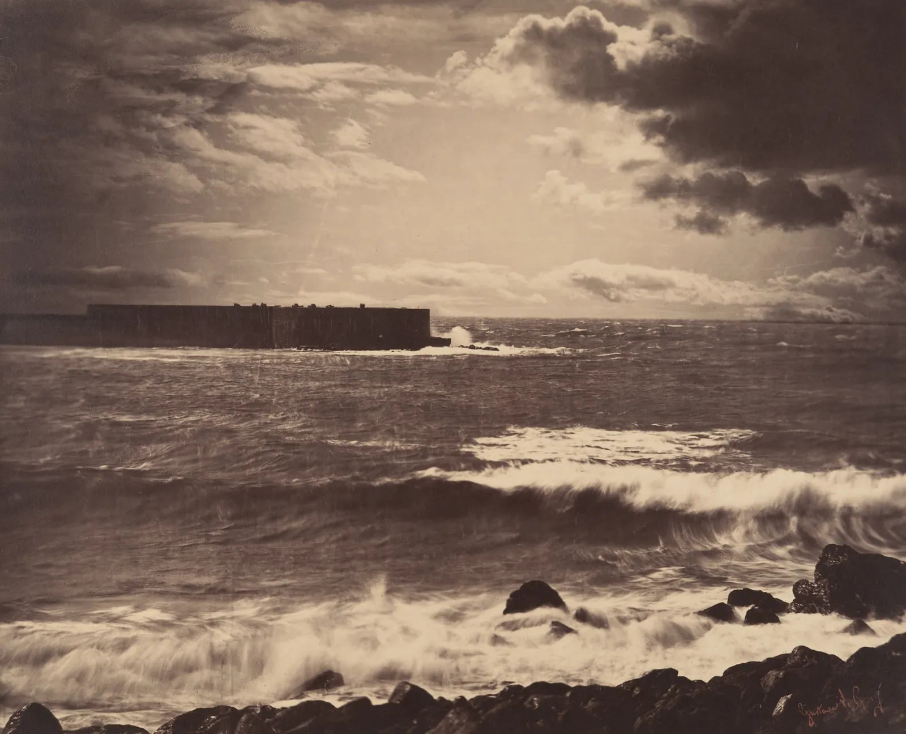

겨울 오후, 창가 자리를 휴대폰으로 찍으면 둘 중 하나가 된다. 실내의 책과 탁자가 보이게 찍으면 창이 하얀 사각형으로 날아가고, 창밖 풍경을 살리면 실내가 시커멓게 가라앉는다. 눈으로 볼 때는 둘 다 보였는데 사진은 왜 하나만 고르라고 할까. 이 장은 사진의 밝기를 막대그래프로 펼친 히스토그램을 읽는 법부터 시작해, 사진이 담을 수 있는 밝기의 폭과 장면이 가진 밝기의 폭이 어떻게 다른지, 그 차이를 메우는 노출 보정과 브래키팅이 무엇을 하는지 직접 확인한다.
히스토그램의 가로축과 세로축이 무엇인지 알고, 막대의 어느 부분이 사진의 어느 곳인지 짚는다.
히스토그램에는 정답 모양이 없으며, 산의 위치는 장면의 성격을 따른다는 것을 여러 장면으로 확인한다.
날아간 하이라이트와 뭉개진 그림자가 무엇이고, 왜 보정으로 되돌릴 수 없는지 설명한다.
노출계가 장면을 중간 회색으로 맞추려 한다는 점을 이해하고, 노출 보정으로 바로잡는다.
다이내믹 레인지를 스톱으로 세고, 장면의 범위가 센서보다 넓을 때 브래키팅과 HDR 합성이 하는 일을 안다.
밝기의 분포: 히스토그램
사진을 찍고 나서 카메라나 편집 앱에서 작은 산 모양 그래프를 본 적이 있을 것이다. 이것이 히스토그램(Histogram)이다. 사진 속 모든 화소를 밝기 순서대로 줄 세운 뒤, 같은 밝기의 화소가 몇 개인지를 막대 높이로 그린 그래프다. 사진의 내용은 사라지고 "어두운 화소가 얼마나, 밝은 화소가 얼마나 있는가"만 남는다.
가로축은 밝기다. 디지털 사진은 화소의 밝기를 보통 0부터 255까지의 숫자로 저장하므로(8비트, 8장), 맨 왼쪽 0이 완전한 검정, 맨 오른쪽 255가 완전한 흰색이다. 세로축은 그 밝기를 가진 화소의 수, 곧 사진에서 그 밝기가 차지하는 넓이다. 막대가 왼쪽에 몰리면 어두운 사진, 오른쪽에 몰리면 밝은 사진이다.
그림 1. 히스토그램의 구조. 가로축은 밝기, 세로축은 그 밝기의 넓이다. 흔히 왼쪽 4분의 1쯤을 그림자, 가운데를 중간 톤, 오른쪽 4분의 1쯤을 하이라이트라고 부르지만 경계가 정해져 있지는 않다. 산이 오른쪽 끝(255)에 붙어 막대가 솟아 있으면, 사진의 그만큼이 완전한 흰색으로 날아갔다는 뜻이다. 왼쪽 끝(0)에 붙은 막대는 완전한 검정으로 뭉개진 곳이다.
히스토그램은 사진의 내용을 모르는 그래프라서, 처음에는 막대와 사진이 잘 연결되지 않는다. 아래에서 둘을 이어 본다. 장면은 가상의 동네 서점 "책방 E"의 창가다. 히스토그램 위에 놓인 띠를 좌우로 끌면, 그 밝기 구간에 속한 화소만 사진에서 밝게 남고 나머지는 흐려진다. 반대로 사진 위를 누르면 그 점의 밝기가 히스토그램의 어디에 떨어지는지 표시된다.
SIMULATOR
막대의 어디가 사진의 어디인가
띠를 끌거나 사진을 누른다
띠의 밝기 구간—
사진에서 차지하는 넓이—
누른 점의 밝기—
해볼 것: ① "창가"에서 띠를 맨 왼쪽(0~31)에 둔다. 서가의 책 틈과 탁자 밑이 남는다. 히스토그램 왼쪽의 높은 산이 바로 이곳들이다. ② 띠를 맨 오른쪽 끝으로 옮긴다. 창 안의 하늘과 눈 쌓인 처마가 남는다. 이 장면은 가운데가 비고 양쪽에 산이 있는 "쌍봉"이다. ③ 사진의 벽, 책등, 창밖 건물을 차례로 눌러 표시가 어디로 가는지 본다. 띠의 폭을 4까지 줄이면 같은 밝기를 가진 화소가 사진 곳곳에 흩어져 있다는 것을 알 수 있다. 히스토그램은 "어디에"를 버리고 "얼마나"만 남긴 그래프다. (화면의 장면은 이 책이 그린 가상의 장면이고, 히스토그램은 각 화소의 휘도를 sRGB 감마로 인코딩한 0~255 값으로 셌다. 카메라마다 밝기 값을 계산하는 방식은 조금씩 다르다.)
히스토그램의 한 막대에는 사진 곳곳의 화소가 섞여 있다. 같은 밝기라면 하늘의 한 점이든 흰 찻잔의 한 점이든 같은 막대에 들어간다. 그래서 히스토그램만 보고 사진을 다시 그릴 수는 없다. 대신 히스토그램은 눈이 쉽게 놓치는 두 가지를 정확히 보여 준다. 사진의 밝기가 어느 쪽에 얼마나 쏠려 있는가, 그리고 양 끝에 부딪혀 잘려 나간 곳이 있는가.
좋은 히스토그램은 없다
사진 강좌에서 "히스토그램이 가운데 종 모양이면 노출이 맞은 것"이라는 말을 듣곤 한다. 절반만 맞는 말이다. 히스토그램의 모양은 노출보다 먼저 장면이 정한다. 흰 탁자보 위의 흰 찻잔은 제대로 찍으면 산이 오른쪽에 몰리고, 밤의 서가 구석은 제대로 찍어도 왼쪽에 몰린다. 그것을 가운데로 끌어오면 흰 찻잔은 회색이 되고 밤은 낮처럼 된다.
ColorBook 6장에서 본 말로 하면, 밝은 쪽에 몰린 화면은 하이 키(High key), 어두운 쪽에 몰린 화면은 로 키(Low key)다. 아래에서 다섯 장면의 히스토그램을 비교한다. 세 장면은 이 책이 그린 것이고, 둘은 실제 작품의 사진이다. 렘브란트의 유화는 어둠으로 짠 그림이고, 귀스타브 르 그레의 1857년 사진은 밝은 하늘과 어두운 바위를 한 장에 담은 바다 풍경이다.
SIMULATOR
산의 모양은 장면의 성격이다
평균 밝기—
그림자 · 중간 · 하이라이트 넓이—
양 끝(0 또는 255)—
해볼 것: ① "흰 찻잔"은 하얀 장면인데도 산이 가운데에 있다. 카메라의 자동 노출이 흰색을 회색으로 찍은 결과다(4절에서 고친다). ② "어두운 서가"는 반대로 어두운 장면이 밝게 들떠 있다. 스탠드가 비춘 책 몇 권이 오른쪽 끝에 부딪혔다. ③ "렘브란트"는 산이 왼쪽에 몰렸고 오른쪽 절반이 거의 비어 있다. 로 키로 그린 그림을 제대로 찍은 사진이다. 비어 있는 오른쪽은 실패가 아니라 그림의 성격이다. ④ "르 그레"는 그림자부터 하이라이트까지 넓게 퍼져 있다. 경계 슬라이더로 그림자 구간을 넓히고 좁혀 보면, 같은 히스토그램도 어디를 "그림자"라고 부르느냐에 따라 숫자가 달라진다는 것을 알 수 있다. (작품 두 점은 렘브란트 판 레인, 「호메로스 흉상을 바라보는 아리스토텔레스」(1653, 크레딧)와 그림 3의 르 그레 사진(크레딧)으로, 둘 다 메트로폴리탄 미술관 소장, 공공 도메인이다. 소장처가 공개한 사진 파일에서 잰 값이다. 사진은 원작을 촬영하고 처리한 결과이므로 원작의 밝기 그 자체는 아니다.)
두 작품의 히스토그램을 비교하면 더 분명해진다. 렘브란트 그림의 사진은 밝은 쪽 절반이 거의 비어 있지만, 그것을 오른쪽으로 끌어 펴면 그림이 아니라 다른 무엇이 된다. 히스토그램을 볼 때 물어야 할 것은 "모양이 예쁜가"가 아니라 두 가지다. 이 장면에 맞는 쪽에 산이 있는가, 그리고 지키고 싶은 곳이 양 끝에 부딪혀 잘리지 않았는가. 두 번째 질문이 다음 절의 주제다.
날아간 하이라이트, 뭉개진 그림자
센서의 한 화소는 빛을 받아 담는 작은 그릇과 같다(8장). 그릇이 가득 차면 빛이 더 들어와도 숫자는 더 커지지 않는다. 이렇게 최댓값에 부딪혀 그 이상의 차이가 지워지는 것을 클리핑(Clipping)이라고 한다. 밝은 쪽 클리핑은 흔히 "하이라이트가 날아갔다"(Blown highlights)고 말한다. 하늘의 구름, 흰 셔츠의 주름, 흰 종이의 결이 모두 같은 255가 되어 평평한 흰 면만 남는다.
어두운 쪽에서는 사정이 조금 다르다. 빛이 아주 적으면 화소의 숫자는 0 근처에서 떨리는 잡음(Noise)에 묻힌다. 신호가 잡음보다 작아지면 그 부분의 결은 더 이상 사진에 남지 않는다. 이것을 "그림자가 뭉개졌다"(Crushed shadows)고 부른다. 이 장의 모형은 신호와 잡음의 크기가 같아지는 곳(신호 대 잡음비 1)을 뭉개짐의 경계로 삼는다.
노출을 한 스톱 올린다는 것은 센서에 닿는 빛을 두 배로 한다는 뜻이다(2장). 그러면 모든 화소의 빛이 두 배가 되고, 그릇이 이미 반 이상 찬 화소는 넘친다.
\(v_{\text{장면}}\): 센서에 닿는 빛의 양(선형광, 그릇이 가득 차는 양을 1로 둔다), \(\Delta EV\): 노출을 바꾼 스톱 수. 기록된 값은 그다음 감마를 거쳐 0~255로 저장된다. \(\min(1, \cdot)\)이 클리핑이다. 1에 부딪힌 화소는 원래 1.2였는지 12였는지 알 수 없게 된다.
하이라이트 경고를 켜 둔다
대부분의 카메라와 일부 휴대폰 촬영 앱에는 날아간 곳을 깜박이거나 줄무늬로 표시하는 기능이 있다. 깜박이는 표시를 사진가들은 흔히 "블링키"(Blinkies), 촬영 중에 화면에 띄우는 사선 줄무늬를 "지브라"(Zebra)라고 부른다. 히스토그램은 날아간 곳이 "얼마나" 되는지만 알려 주지만, 경고 표시는 "어디가" 날아갔는지 알려 준다. 창 귀퉁이 하늘처럼 버려도 되는 곳인지, 흰 찻잔의 몸통처럼 지켜야 할 곳인지는 사진을 보고 사람이 판단한다. 작품을 찍을 때는 종이의 흰 바탕이 깜박이면 안 된다.
날아간 곳과 뭉개진 곳이 왜 문제인지는, 나중에 보정으로 되살려 보면 안다. 아래 시뮬레이터의 왼쪽은 알맞게 찍은 사진이고, 오른쪽은 노출을 일부러 틀리게 찍은 뒤 편집에서 밝기를 되돌린 사진이다. 경계선을 끌어 둘을 비교하고, 틀린 정도를 키워 본다.
SIMULATOR
잘못 찍고 나중에 고치면
되살릴 수 없는 화소—
그림자 구간의 잡음(흔들림)—
알맞은 사진과의 평균 차이—
해볼 것: ① "흰 찻잔", "밝게 찍고 어둡게", 1스톱에서 경계선을 끈다. 찻잔 몸통의 밝은 쪽 명암과 종이의 흰 바탕이 오른쪽에서는 평평한 회색 면이 되었다. 255에 부딪혔던 화소는 어둡게 해도 똑같은 회색이 될 뿐이다. 2스톱이면 하얀 장면 거의 전체가 그렇게 된다. ② "어둡게 찍고 밝게"로 바꾼다. 이번에는 결이 남아 있지만, "창가"로 바꾸고 3~4스톱까지 올리면 서가와 탁자 밑에 잡음이 끓어오르고, 그림자 구간의 흔들림 수치가 몇 배로 커진다. ③ 두 방향을 비교한다. 밝은 쪽 잘못은 정보가 아예 없어지고, 어두운 쪽 잘못은 정보가 거칠어진다. (8비트 JPEG로 저장한 뒤 편집했다고 가정했다. 센서의 원래 값을 더 많이 담는 RAW 파일은 되살릴 여유가 더 있지만, 센서 그릇이 넘친 곳은 RAW로도 되살릴 수 없다. RAW는 8장에서 다룬다.)
밝은 쪽 실수는 되돌릴 수 없고, 어두운 쪽 실수는 거칠게나마 되돌릴 수 있다. 이 비대칭이 디지털 사진의 노출에서 가장 중요한 사실 중 하나다. 그래서 많은 사진가가 "하이라이트를 지켜라"를 첫 원칙으로 삼는다. 단, 어두운 쪽도 너무 깊이 내려가면 잡음과 계단이 생긴다. 지킬 하이라이트가 장면의 아주 작은 일부라면(전구 알, 물결의 반짝임), 그것은 날려 보내고 나머지를 살리는 편이 낫다. 정반사로 생긴 반짝임은 원래 종이 흰색보다 밝은 것이 자연스럽기 때문이다.
노출계는 장면을 모른다: 노출 보정
카메라의 자동 노출은 노출계(Light meter)가 잰 밝기로 노출을 정한다. 노출계가 아는 것은 들어온 빛의 양뿐이다. 그 빛이 흰 찻잔에서 왔는지 회색 벽에서 왔는지 모른다. 그래서 노출계는 하나의 관습을 따른다. 측정한 영역의 평균이 중간 회색, 흔히 반사율 18%의 회색으로 찍히도록 노출을 맞춘다(2장). 대부분의 장면은 밝은 곳과 어두운 곳이 섞여 평균이 중간쯤에 오므로 이 관습이 잘 맞는다.
문제는 평균이 중간이 아닌 장면이다. 흰 찻잔이나 눈밭은 회색으로, 어두운 서가나 검은 옷은 회색으로 들뜬다. 이것을 바로잡는 손잡이가 노출 보정(Exposure compensation)이다. +1은 노출계가 고른 값보다 한 스톱 밝게, −1은 한 스톱 어둡게 찍으라는 뜻이다. 아래에서 장면과 측광 방식을 바꾸며 자동 노출이 고른 결과를 보고, 보정 슬라이더로 바로잡는다. "스폿"에서는 사진 위의 측광 원을 끌어 어디를 잴지 고른다.
SIMULATOR
노출계가 고른 노출과 노출 보정
스폿 원을 끈다
평균 밝기 값—
날아간 화소—
뭉개진 화소—
해볼 것: ① "흰 찻잔", 평균 측광, 보정 0에서 평균 밝기 값이 120 안팎이다. 흰 장면이 회색으로 찍혔다. 보정을 +1⅔까지 올리면 찻잔과 종이가 하얘지고, +2 이상에서 줄무늬가 나타나기 시작한다. ② "어두운 서가"는 반대다. 평균 측광은 어둠을 회색으로 들어 올리고 스탠드 빛은 날려 버린다. 보정을 −2 안팎으로 내린다. ③ "창가"에서 "스폿"을 고르고 측광 원을 서가에, 다음에 창밖 하늘에 끈다. 서가에 맞추면 창 전체가 날아가고, 하늘에 맞추면 실내가 검게 가라앉는다. 어느 한 점에 맞춰도 장면 전체를 담지는 못한다. (측광은 선형광의 평균이 0.18이 되게 하는 단순 모형이다. 실제 카메라의 측광, 특히 "평가 측광"이나 "패턴 측광"은 장면을 나눠 분석하는 독자적인 방식을 쓴다. 센서의 다이내믹 레인지는 11스톱으로 가정했다.)
흰 찻잔은 +1⅔ 안팎, 어두운 서가는 −2 안팎에서 장면다운 모습이 돌아온다. 보정량에 정해진 공식은 없지만 방향은 늘 같다. 장면이 중간보다 밝으면 플러스, 어두우면 마이너스. 그리고 창가 장면처럼 아주 밝은 곳과 아주 어두운 곳이 함께 있으면, 어디에 맞추든 무언가를 잃는다. 노출 보정은 "어디를 지킬지" 고르는 손잡이일 뿐, 장면의 밝기 범위 자체를 줄여 주지는 않는다.
휴대폰으로 창가 세 장 찍기
맑거나 흐린 낮에 창이 보이는 실내 자리를 고른다. 휴대폰 카메라 앱에서 ① 아무것도 누르지 않고 한 장, ② 화면에서 실내의 어두운 물건을 눌러 한 장, ③ 창밖 하늘을 눌러 한 장을 찍는다(많은 휴대폰은 화면을 누른 곳에 초점과 노출을 맞추고, 누른 뒤 위아래로 끌면 밝기를 조절할 수 있다). 사진 편집 앱이나 컴퓨터의 사진 프로그램에서 세 장의 히스토그램을 나란히 띄운다. 어느 사진이 오른쪽 끝에, 어느 사진이 왼쪽 끝에 막대가 붙어 있는지 적고, 눈으로 볼 때 창밖과 실내가 둘 다 보였다는 기억과 비교한다. 휴대폰이 여러 장을 찍어 합치는 기능(HDR)을 자동으로 쓰고 있다면 ①의 결과가 의외로 좋을 수 있다. 그 이유는 6절에서 본다.
다이내믹 레인지: 장면의 폭과 센서의 폭
장면에서 가장 밝은 곳과 가장 어두운 곳의 밝기 비를 다이내믹 레인지(Dynamic range)라고 한다. 사진에서는 이 비를 스톱으로 센다. 한 스톱이 두 배이므로, 밝기가 1,000배 차이 나면 약 10스톱이다.
\(Y_{\max}, Y_{\min}\): 장면(또는 센서가 기록할 수 있는)의 가장 밝은 밝기와 가장 어두운 밝기. 센서의 경우 \(Y_{\max}\)는 화소가 가득 차는 양, \(Y_{\min}\)은 신호가 잡음과 같아지는 양으로 정의하는 경우가 많다. 이 장의 장면 범위는 극단적인 몇 화소에 끌려가지 않도록 가장 어두운 1%와 가장 밝은 0.1% 지점 사이로 쟀다.
이 책의 모델로 계산하면, 앞의 창가 장면은 창밖 하늘과 탁자 밑 그늘 사이가 약 11.6스톱이다. 밝기 비로는 3,000배가 넘는다. 실제 겨울 낮의 창가도 이 정도이거나 그 이상인 경우가 흔하다. 한편 센서가 한 장에 담을 수 있는 범위는 기종, 감도(ISO), 측정 기준에 따라 다르게 보고되며, 흔히 10~14스톱 정도로 소개된다. 그리고 그 사진을 보여 줄 화면과 종이의 범위는 그보다 더 좁다.
그림 2. 밝기의 사다리. 이 책의 모델에서 창가 장면의 범위(약 11.6스톱)는 센서 한 장의 범위(이 장에서는 11스톱으로 가정)보다 조금 넓다. 노출을 정한다는 것은 센서의 막대를 장면의 막대 위 어디에 놓을지 정하는 일이다. 그림은 하늘을 지키는 자리에 놓았고, 그 대가로 탁자 밑이 막대 밖으로 밀려났다. 노출을 달리한 여러 장을 합치면 막대가 길어진다. 마지막 줄의 인쇄물은 종이의 흰색과 가장 짙은 잉크 사이의 대략적인 범위로, 종이와 잉크에 따라 다르다. 넓은 장면을 결국 좁은 종이에 옮기려면 어딘가를 눌러 담아야 한다(6절).
그림 2를 직접 움직여 본다. 아래 그래프의 가로축은 밝기를 스톱으로 잰 것이고, 회색 산은 창가 장면의 밝기 분포다. 산 위의 테두리 상자가 센서의 범위다. 상자를 좌우로 끄는 것이 곧 노출을 바꾸는 일이다. 상자의 오른쪽 밖으로 나간 밝기는 날아가고, 왼쪽 밖으로 나간 밝기는 뭉개진다. 아래 사진에 그 결과가 바로 나타난다.
SIMULATOR
센서의 창을 장면 위에 놓기
센서 상자를 좌우로 끈다
장면의 범위—
날아간 화소—
뭉개진 화소—
해볼 것: ① 상자를 끌어 오른쪽 끝을 하늘 봉우리의 오른쪽에 맞춘다. 창밖은 살지만 탁자 밑과 서가의 어두운 책등이 파랗게 표시된다. ② 다이내믹 레인지를 13스톱으로 올린다. 상자가 장면 전체를 덮어 두 가지를 다 지킬 수 있다. 반대로 8스톱까지 내리면 어디에 두어도 한쪽이 크게 잘린다. 값을 6까지 밀면 사진은 창 아니면 실내, 둘 중 하나만 남는다. ③ "창가 + 실내등"으로 바꾼다. 실내가 밝아져 장면의 범위가 0.7스톱쯤 줄어든다. 범위가 센서보다 넓을 때 가장 정직한 해결은 장면 자체의 범위를 줄이는 것, 곧 어두운 곳에 빛을 더하는 것이다. (장면은 이 책의 가상 모형이다. 센서는 [0, 1]에서 잘리고, 잡음의 표준편차를 2−DR로 두어 신호 대 잡음비 1인 곳을 아래 끝으로 삼았다. 실제 센서의 잡음은 밝기에 따라 달라지는 광자 잡음이 더해져 더 복잡하다.)
센서의 범위가 장면보다 좁을 때 할 수 있는 일은 셋이다. 하나, 상자를 어디에 둘지 고른다(노출 보정). 둘, 장면의 범위를 줄인다. 실내등을 켜거나 반사판으로 어두운 곳을 밝히거나(4장), 해가 낮아져 창밖이 덜 밝은 시간을 고른다. 셋, 상자를 여러 번 옮겨 가며 찍고 나중에 합친다. 이것이 다음 절의 브래키팅이다.
눈의 다이내믹 레인지와 존 시스템
우리 눈이 창밖과 실내를 둘 다 본다고 느끼는 것은 눈이 한꺼번에 넓은 범위를 담아서라기보다, 시선이 옮겨 갈 때마다 동공과 망막이 빠르게 적응하고 뇌가 그 결과를 하나의 장면으로 이어 붙이기 때문이다(ColorBook 2장의 순응). 그래서 "눈의 다이내믹 레인지는 몇 스톱"이라는 숫자는 측정 조건에 따라 크게 달라진다. 사진가들은 이 간극을 오래전부터 의식했다. 미국의 사진가 앤설 애덤스(Ansel Adams)는 1940년 무렵 프레드 아처(Fred Archer)와 함께 존 시스템(Zone System)을 정리했다. 장면의 밝기를 한 스톱 간격의 열한 구역(0~X)으로 나누고, 어떤 물체를 어느 구역에 놓을지 미리 정한 뒤 노출과 필름 현상을 맞추는 방법이다. 이 장의 센서 상자를 장면 위에 놓는 생각과 같다. 다만 존 시스템이 다듬어진 흑백 네거티브 필름은 밝은 쪽이 디지털 센서처럼 뚝 잘리지 않고 완만하게 눌려 담기는 성질이 있었다. 필름 시절의 격언 "그림자에 맞춰 노출하고, 하이라이트에 맞춰 현상하라"가 디지털에서 "하이라이트를 지켜라"로 뒤집힌 이유다.
브래키팅과 HDR 합성
브래키팅(Bracketing)은 같은 장면을 노출만 달리해 여러 장 찍는 것이다. 예를 들어 −2, 0, +2 EV로 세 장을 찍으면, 어두운 장은 하늘을, 밝은 장은 서가를, 가운데 장은 그 사이를 맡는다. 이 장들을 하나로 합치는 것을 HDR 합성(High dynamic range imaging)이라고 한다. 원리는 간단하다. 화소마다 각 장의 값을 선형광으로 되돌리고 노출 차이만큼 나눠 같은 눈금에 놓은 다음, 날아가지도 잡음에 묻히지도 않은 장의 값을 더 믿어 평균한다. 1997년 폴 데베벡(Paul Debevec)과 지텐드라 말릭(Jitendra Malik)이 발표한 방법이 이 생각의 고전적인 예다.
합치면 장면 전체를 담은 밝기 지도가 생기지만, 화면과 종이는 그 범위를 다 보여 주지 못한다. 그래서 넓은 범위를 좁은 범위에 눌러 담는 단계가 하나 더 필요하다. 이것이 톤 매핑(Tone mapping)이다. 하이라이트를 부드럽게 접어 넣는 정도는 자연스럽지만, 너무 세게 누르면 밝은 창과 어두운 서가가 같은 밝기가 되어 평평하고 이상한 그림, 흔히 "HDR 느낌"이라 부르는 결과가 나온다. 아래에서 브래키팅 간격과 톤 매핑 강도를 바꿔 본다.
SIMULATOR
세 장을 한 장으로
세 장이 덮는 범위—
합친 뒤 날아간 · 뭉개진—
창과 벽의 밝기 차이—
해볼 것: ① 간격 2, 강도 40%에서 위의 세 장과 아래 합친 사진을 비교한다. 하늘의 밝기 변화와 서가의 책등이 한 장에 함께 있다. 창은 여전히 벽보다 밝다. ② 간격을 0.5로 줄인다. 세 장이 거의 같아 덮는 범위가 12스톱에 그치고, 하늘 일부가 날아간 채로 남는다. ③ 강도를 100%까지 올린다. 창과 벽의 밝기 차이가 줄어들고, 창틀 둘레에 뿌연 테두리(헤일로)가 생기며 실내가 바깥만큼 밝아진다. 정보는 다 있는데 장면은 거짓말을 한다. ④ "손님이 지나간다"를 켠다. 세 장에서 사람의 위치가 달라 반투명한 유령 셋이 생긴다. 이것을 고스트(Ghost)라고 한다. (합성 가중치는 데베벡–말릭의 삼각형 함수, 0~50%는 라인하르트 외(2002)의 전역 톤 매핑, 50%를 넘으면 넓은 흐림으로 큰 밝기 차이를 깎는 단순한 국소 톤 매핑을 더했다. 실제 앱의 합성은 정렬, 고스트 제거, 장면 분석을 함께 한다.)
휴대폰 카메라가 셔터를 한 번 누를 때 실제로는 여러 장을 연달아 찍어 합치는 경우가 많다. 앞의 "직접 해 보기"에서 아무것도 누르지 않은 사진이 의외로 괜찮았다면 이런 자동 합성 덕분일 수 있다. 어떤 장을 몇 장 찍어 어떻게 합치는지는 기종과 소프트웨어마다 다르고 공개되지 않은 경우가 많으므로, 이 책은 원리만 다룬다. 원리로 보면 장점과 약점이 같다. 움직이지 않는 장면에서는 센서 한 장보다 넓은 범위를 담고, 움직이는 사람과 흔들리는 나뭇잎 앞에서는 고스트와 번짐이 생기기 쉽다.

그림 3. 귀스타브 르 그레, 「큰 파도, 세트」, 1857. 프랑스 남부 항구 세트의 바다를 찍은 사진이다. 이 무렵의 유리 원판(콜로디온 습판)은 푸른빛에 특히 민감해서, 바다에 노출을 맞추면 하늘이 하얗게 날아가기 쉬웠다. 그래서 19세기 풍경 사진에는 구름 없이 하얀 하늘이 흔하다. 르 그레의 바다 사진들은 밝은 하늘의 구름과 어두운 바다를 한 장에 담아 당시 큰 주목을 받았고, 그의 바다 사진 가운데 일부는 하늘과 바다를 따로 찍은 두 원판으로 인화한 것(조합 인화)으로 알려져 있다. 이 한 장이 어느 방식인지는 이 책에서 확인하지 못했다. 어느 쪽이든 그가 마주한 문제는 이 장의 문제, 곧 장면의 범위가 매체의 범위보다 넓다는 것이었다. 앞의 "산의 모양" 시뮬레이터에서 이 사진의 히스토그램을 볼 수 있다.메트로폴리탄 미술관 소장(Gift of John Goldsmith Phillips, 1976), 유리 원판에서 뜬 알부민 은 인화, 33.7 × 41.4 cm. 공공 도메인(The Met Open Access, CC0). 대지 가장자리를 잘라 냈다. 소장처 작품 페이지 · 크레딧
"실물과 같게"와 "모두 보이게"는 다르다
HDR 합성은 창밖과 실내를 모두 보이게 해 주지만, 모두 보이는 사진이 실물과 같은 사진은 아니다. 실제 장면에서 창은 벽보다 수십 배 밝고, 사람은 그 차이를 "창가에 앉아 있다"는 느낌으로 받아들인다. 톤 매핑으로 창과 벽의 밝기를 거의 같게 만들면 정보는 늘지만 그 느낌은 사라진다. 서점이나 숙소, 음식 사진에서 지나친 HDR이 "실제로 가 보니 다르다"는 실망으로 이어지는 이유다. 합성을 쓰더라도 밝은 곳은 밝게, 어두운 곳은 어둡게 두는 순서는 지킨다. 히스토그램으로 말하면 합친 뒤에도 창의 산이 벽의 산보다 오른쪽에 있어야 한다.
일부러 날리고, 일부러 잠그기
지금까지는 클리핑을 피할 대상으로 다뤘다. 하지만 사진의 역사에는 일부러 하이라이트를 날리거나 그림자를 잠근 좋은 사진이 많다. 밝은 창을 등진 사람을 실루엣으로 찍으면 얼굴의 세부는 없지만 자세와 윤곽이 또렷해진다. 흰 배경을 완전히 날린 하이 키 사진은 물건만 떠 있는 듯한 가벼움을 준다. 어둠 속에서 빛 하나만 남기는 로 키 사진은 렘브란트의 그림처럼 시선을 한 곳에 모은다.
동아시아 그림에도 비슷한 생각이 있다. ColorBook 6장에서 본 수묵 산수화는 물과 하늘을 칠하지 않고 바탕으로 남겨 두었다. 그 여백에는 세부가 없지만 비어 있다고 느껴지지 않는다. 사진의 날아간 하늘도 그렇게 쓰일 수 있다. 차이는 하나다. 그것이 선택이었는가, 사고였는가. 같은 하얀 창이라도 "이 사진의 주인공은 창가에 앉은 사람이고, 창밖은 빛으로만 남긴다"고 정했다면 선택이고, 실내를 찍으려다 창이 날아갔다면 사고다. 히스토그램과 하이라이트 경고는 그 차이를 셔터를 누르는 순간에 알게 해 준다.
노출을 정하는 순서
현장의 사진가들은 노출을 대략 이 순서로 정한다. 첫째, 이 사진에서 반드시 결이 남아야 하는 가장 밝은 곳과 가장 어두운 곳을 하나씩 고른다(창가 사진이라면 창밖 하늘의 구름과 서가의 책 제목). 둘째, 가장 밝은 곳이 경고에 걸리지 않을 때까지 노출을 내린다. 셋째, 그때 가장 어두운 곳이 잡음에 묻히는지 확인한다. 묻히면 빛을 더하거나, 시간을 바꾸거나, 브래키팅을 한다. 넷째, 버려도 되는 곳(전구 알, 탁자 밑)은 처음부터 목록에서 뺀다. 이 순서는 카메라 화면의 히스토그램이 보통 JPEG 미리보기로 그려진다는 점도 감안한 것이다. RAW로 찍으면 실제로는 조금 더 여유가 있지만, 그 여유를 믿고 경고를 무시하는 습관은 들이지 않는 편이 낫다.
창가 사진의 노출 설계
마지막 시뮬레이터는 이 장의 도구를 모아 책방 E 창가 사진의 노출을 직접 정한다. 네 가지 출발점을 고른 뒤, 노출 보정(평균 측광 기준), 센서의 범위, 실내등, 브래키팅을 바꿔 본다. 아래 숫자는 장면을 세 곳으로 나눠 센다. 창(지켜야 할 하이라이트), 서가(지켜야 할 그림자), 탁자 밑(버려도 되는 그림자)이다.
SIMULATOR
책방 E 창가 사진 노출 설계기
창 날아감—
서가 뭉개짐—
탁자 밑 뭉개짐—
판정—
해볼 것: ① "서가에 맞춤"은 화면에서 서가를 눌러 노출을 맞춘 결과다. 실내는 밝고 고르지만 창이 거의 통째로 날아간다. 1장에서 서윤이 휴대폰으로 처음 찍은 사진처럼 창이 하얀 사각형이 된다. ② "하이라이트 지키기"는 창의 경고가 모두 사라지는 지점(−1⅔)이다. 창밖이 살아나는 대신 서가의 어두운 책등 일부와 탁자 밑이 잡음 아래로 내려간다. 보정을 1/3씩 올려 창에 경고가 처음 나타나는 곳을 찾는다. ③ "그림자 지키기"는 반대로 서가와 탁자 밑을 지키고 하늘을 내준다. ④ "브래키팅 3장"을 고르면 세 칸이 모두 0%다. ⑤ 다시 "하이라이트 지키기"로 돌아가 "실내등 켜기"를 켠다. 한 장으로도 서가의 손실이 27%에서 2%로 준다. 센서 범위를 8까지 내려 어떤 출발점이 끝까지 버티는지 본다. (장면은 이 책의 가상 모형이고 센서 범위 11스톱은 가정이다. 실제 카메라에서는 이 숫자 대신 화면의 히스토그램과 하이라이트 경고로 같은 판단을 한다. 실내등의 빛 색은 여기서 다루지 않는다.)
네 출발점 중 정답은 없다. 무엇을 지킬지는 사진의 쓰임이 정한다. 서점 웹사이트의 첫 화면에 걸 창가 사진이라면 창밖의 겨울 풍경도 서가의 책도 보여야 하니 브래키팅이 맞고, 손님이 오가는 모임 장면처럼 여러 장을 합칠 수 없는 사진이라면 하이라이트를 지킨 한 장에 그림자를 조금 끌어올리는 편이 낫다. 창을 일부러 빛으로만 남기는 사진이라면 "서가에 맞춤"도 선택이 될 수 있다. 판단의 근거가 "그냥 자동으로 찍었더니"가 아니라 히스토그램 위의 숫자라는 점이 다를 뿐이다.
서윤의 촬영 노트
CASE 서윤촬영 노트 · 3장
창을 지킬 것인가, 서가를 지킬 것인가
2027년 12월 둘째 주 오후, 서윤은 책방 E의 창가 자리를 다시 찍었다. 1장에서 휴대폰 자동 모드로 찍은 첫 사진은 창이 하얀 사각형이었다. 이번에는 미러리스 카메라의 히스토그램과 하이라이트 경고를 켰다. 서가를 기준으로 노출을 맞추자 화면 속 창 전체에 줄무늬가 깜박였고, 히스토그램 오른쪽 끝에 막대가 솟았다.
이 책의 모델로 계산하면 창가 장면의 범위는 약 11.6스톱(가장 어두운 1%부터 가장 밝은 0.1%까지)이다. 센서가 한 장에 11스톱을 담는다고 가정하면, 서가에 맞춘 노출(평균 측광보다 +3⅔ EV)에서는 창 영역 전체가 날아간다. 평균 측광 그대로(보정 0)여도 창의 약 40%가 날아간다. 창의 경고가 처음으로 모두 사라지는 지점은 −1⅔ EV다. 그 대신 서가 화소의 약 4분의 1과 탁자 밑의 4분의 3이 잡음 아래로 내려간다. −2, 0, +2 EV 세 장을 합치면 덮는 범위가 15스톱이 되어 세 영역의 손실이 모두 0%가 된다.
한도경은 필름 시절 이야기를 꺼냈다. "네거티브 필름으로 찍을 때는 그림자에 맞추라고 배웠어. 밝은 쪽은 필름이 알아서 눌러 담아 줬거든." 서윤이 카메라 화면을 보여 주자 도경은 고개를 끄덕였다. "이건 반대네. 넘친 건 아예 없어지는구나. 그럼 창부터 지켜야지." 책방 E 주인은 합성 시험본을 보고 한마디 했다. "창밖이 다 보이는 건 좋은데, 실내가 창만큼 밝으면 우리 가게 같지 않아요. 우리 가게는 창가가 밝고 안쪽이 아늑한 곳이니까." 서윤은 톤 매핑을 약하게 두어, 합친 사진에서도 창이 벽보다 확실히 밝게 남도록 했다.
지킬 하이라이트창밖 하늘·처마지킬 그림자서가 책등버려도 되는 그림자탁자 밑
이 장에서 정한 것창가 사진의 노출 기준은 하이라이트를 지키는 쪽이다. 창 영역에 하이라이트 경고가 하나도 남지 않는 노출(이 장면에서는 평균 측광보다 −1⅔ EV)을 기준으로 삼고, 탁자 밑처럼 버려도 되는 그림자는 검게 둔다. 웹사이트 첫 화면용 창가 사진은 −2, 0, +2 EV 세 장 브래키팅으로 찍어 합치되, 카메라를 움직이지 않고 손님이 없는 개점 전에 찍는다. 합친 뒤에도 창이 벽보다 밝게 남도록 톤 매핑은 약하게 한다. 사람이 움직이는 장면은 합성하지 않고 하이라이트를 지킨 한 장으로 찍는다.
아직 남은 문제실내등을 켜면 한 장으로도 서가가 살아나지만, 창의 낮빛과 실내등의 빛은 밝기만이 아니라 색도 다르다. 그리고 다음 과제인 도록 작품 촬영에서는 창빛에 기댈지, 조명을 따로 쓸지부터 정해야 한다.
다음 단계4장: 빛의 크기, 방향, 거리, 색. 작품을 고르게 비추는 조명 배치를 찾는다.
핵심 정리
히스토그램은 사진의 화소를 밝기(0 검정 ~ 255 흰색)별로 센 막대그래프다. "어디에"는 버리고 "얼마나"만 남긴다.
히스토그램에 정답 모양은 없다. 흰 장면은 오른쪽, 어두운 장면은 왼쪽에 산이 있는 것이 맞다. 볼 것은 산이 장면에 맞는 쪽에 있는가, 지킬 곳이 양 끝에서 잘리지 않았는가다.
하이라이트가 날아가면(클리핑) 그 차이는 영영 사라지고, 그림자는 잡음에 묻히며 거칠어진다. 밝은 쪽 실수가 더 되돌리기 어렵기 때문에 디지털에서는 하이라이트를 먼저 지킨다.
노출계는 측정한 곳의 평균을 중간 회색으로 맞춘다. 중간보다 밝은 장면은 플러스, 어두운 장면은 마이너스로 노출을 보정한다.
다이내믹 레인지는 가장 밝은 곳과 가장 어두운 곳의 밝기 비를 스톱(log₂)으로 센 것이다. 장면의 범위가 센서보다 넓으면 어딘가는 잘린다.
범위를 다루는 방법은 셋이다. 어디를 지킬지 고르기(노출 보정), 장면의 범위를 줄이기(빛 더하기, 시간 바꾸기), 여러 장을 합치기(브래키팅, HDR). 합친 뒤의 톤 매핑은 밝은 곳이 밝게 남을 만큼만 한다.
확인 퀴즈
1. 창가 사진의 히스토그램을 보니 맨 오른쪽 끝(255)에 높은 막대가 솟아 있다. 가장 알맞은 해석은?
끝에 붙어 솟은 막대는 최댓값에 부딪힌 화소, 곧 클리핑된 하이라이트다. 하얀 물건이 많아도 제대로 찍으면 산이 오른쪽에 "가까이" 오지, 255 한 값에 몰려 솟지는 않는다. 어떤 곳이 날아갔는지는 하이라이트 경고로 확인한다.
2. 흰 탁자보 위의 흰 찻잔을 평균 측광 자동 노출로 찍었더니 전체가 칙칙한 회색이 되었다. 원인과 대처로 가장 알맞은 것은?
노출계는 무엇을 찍는지 모르고 측정 영역의 평균이 중간 회색(18% 관습)이 되게 노출을 고른다. 평균이 중간보다 밝은 장면은 회색으로 어둡게 찍히므로 플러스 보정이 필요하다. 이 장의 모델에서는 +1⅔ 안팎에서 흰색이 돌아왔다. 화이트 밸런스는 색의 치우침을 고치는 것이지 밝기를 고치지 않는다.
3. 하늘이 날아갈 만큼 2스톱 밝게 찍은 JPEG 사진을, 편집 앱에서 노출 −2로 되돌렸다. 하늘은 어떻게 되는가?
255에 부딪힌 화소는 원래 얼마나 밝았는지에 대한 정보가 남아 있지 않다. 모두 같은 값을 똑같이 어둡게 하면 같은 회색이 될 뿐이다. 잡음과 계단이 생기는 것은 어둡게 찍고 밝게 끌어올린 반대 경우다.
4. 장면의 범위가 12스톱이고 센서가 한 장에 11스톱을 담는다. −2, 0, +2 EV로 세 장을 찍어 합치면 덮을 수 있는 범위와 주의할 점으로 알맞은 것은?
어두운 장은 밝은 쪽 끝을 2스톱 더 올려 주고, 밝은 장은 어두운 쪽 끝을 2스톱 더 내려 준다. 세 장의 범위가 겹치므로 단순히 더하지 않는다. 합성은 같은 장면을 찍었다고 가정하므로, 장 사이에 위치가 바뀐 것은 반투명한 고스트가 된다.